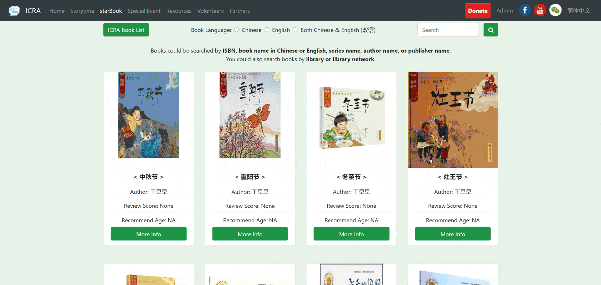

Loading ...
Loading ...

Project Length: Two month development + up to date maintenance
Link: starBook Program Link
Role: Product Manager and Web APP Developer
Client: International Chinese Reading Association (ICRA)
Industry: Non-profit organization
Tech Tool: Python Django

During my first several meetings with the client, the meeting goal is to clarify the client’s demands and identify the client’s requirements.
Main challenge: The client did not have a clear vision for the project and was not familiar with Web APP development.
Strategy: Instead of confirming the project vision and goal immediately, I decided to have a few meetings with my client - had conversations with different stakeholders and helped them to envision the project as a whole by identifying their needs. The key points were to give them enough time to think and reflect and be flexible to make changes.
Deliverable: A project proposal detailing the project vision, project goal, implementation plan, potential risk, and communication plan.
The Web APP is designed to serve two types of users, program participating parents and program managers. Therefore, there are two basic personas created below.
Lucy, 35 years old, a mother of two kids whose ages are 3 and 5. She wants to borrow or buy some Chinese children’s books for her kids but does not know which libraries to go to or what books are recommended. She participates in the starBook program and wants to get some related book information on the program Web APP. At the same time, she could also recommend any book to the program and comment on existing books.
Tim, 28 years old, an ICRA volunteer for the starBook program. He needs to use the program Web APP to manage the book collection list. He has his administration account and can upload, download, modify, and delete any book record in the administration interface.
Deliverable: A flowchart to map the book recommendation or comment process.
To better visualize the Web APP and discuss the design with my client, I sketched main page wireframes and revised them during meetings.
Strategy: Because the client might want to add and drop elements anytime, I sketched wireframes so that both my client and I could make instant changes during our conversations instead of wasting time waiting for me to make changes on fancy mockup tools.
Deliverable: Final sketch wireframes illustrating structures of the program home page and book collection page.

I scheduled weekly meetings with my client as well as any additional meetings as necessary. Conversations mainly focused on development updates from me, feedback from my client, and goals for the next week.
Strategy: Communication is key. Weekly plans and iteration are the best methods to guarantee there is no lag between my client and me. Besides the development updates, I also frequently revisited the project goals with my client to fulfill the product’s business value.

We implemented both internal testing and external feedback collection.
Internal Testing: The Web APP was firstly tested by program managers to test functionalities and fix bugs.
External Feedback Collection: The Web APP was then launched to collect user experience feedback from program participating parents (public users).
We continue collecting feedback and make improvements/maintenance every two months.
As the client desired, I have further expanded the Web APP from the program site only to the website for the whole organization. The development is in progress and has partly launched based on clients’ demands.